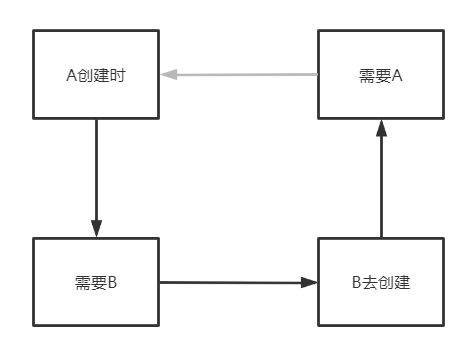
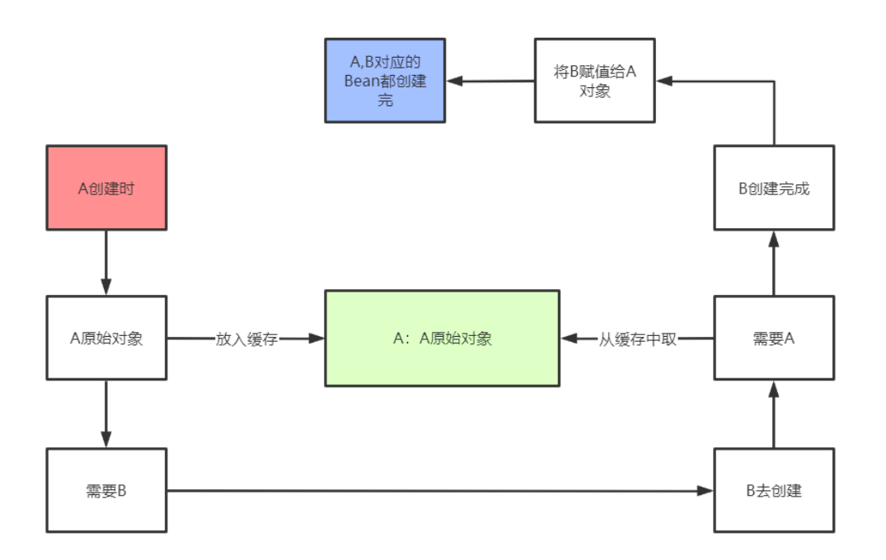
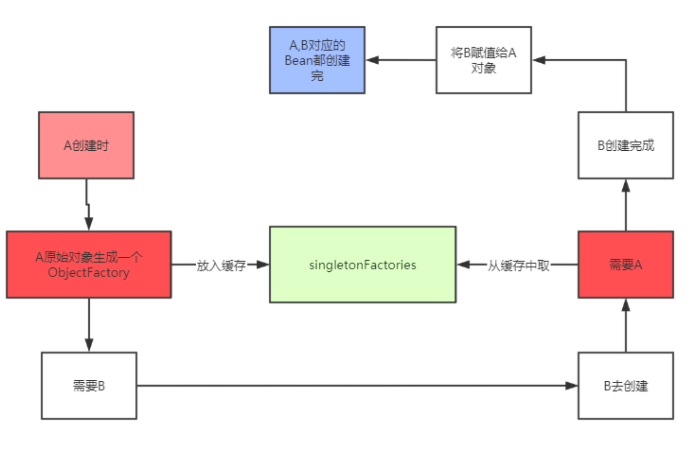

什么是循环依赖？
循环依赖简单来说，就是两个对象之间彼此依赖，在A对象中依赖B对象，在B对象中又依赖了A对象。单纯程序代码角度来说，这并不是什么问题，对象之间的相互依赖再正常不过了。但是如果这样的问题放在Spring中，那问题就来了。
因为在Spring中，一个对象有一个完整的生命周期，并不是简单的new出来就完事了，正因为有了bean的生命周期，才会出现循环依赖的问题。
那我们有必要先了解一下Spring中Bean的生命周期，参考SpringBean的生命周期详解、Spring底层核心原理
通过分析SpringBean的生命周期，我们可以发现，在Spring中，要构造一个Bean，包括了New这个步骤（构造方法反射），得到一个原始对象后，Spring需要给对象中的属性进行依赖注入，那我们重点了解下这个注入过程又是怎么样呢？
比如有一个A类，A类中存在一个B类的b属性，所以在A类生成一个原始对象之后，就会去给b属性去赋值，此时就会选择b属性的类型和属性名去BeanFactory中去获取B类所对应的单例bean，
- 如果此时BeanFactory中存在B对应的bean，那么直接拿来赋值给b属性；
- 如果此时BeanFactory中不存在B对应的Bean，则需要生成一个B对应的bean，然后赋值给b属性。
如果是第二种情况，那么就需要去生成，就会经过B的bean的生命周期。
在创建B类的Bean的过程中，如果B类中存在一个A类的a属性，那么创建B的bean的过程中就需要A类对应的bean，但是触发B类的Bean的创建条件是A类Bean在创建过程中的依赖注入，所以二者相互依赖就出现了循环依赖：
A(Bean创建) -> 依赖b属性 -> 触发创建B Bean -> B依赖了a属性 -> 需要A Bean （但是此时A的bean还在创建过程中）
上述过程中就导致了A Bean创建不出来，B Bean也创建不出来。
在spring中，通过某种机制帮我们解决了部分循环依赖的问题，那就是三级缓存。
最终目的
创建依赖对象B的对象A，最终我们想要得到两个经历过完整生命周期的Bean，在Spring中我们在解决简单的循环依赖之外，还要考虑到Spring AOP的问题，我们最终要得到的经历过完整生命周期的Bean，如果bean是需要经过AOP的，那必然得到的是AOP代理对象。带着这个目的，接着看Spring中是如何解决这个问题的。
三级缓存
三级缓存是我们通常的叫法，具体分别是指：
- 一级缓存：singletonObjects，其中缓存的是已经经历了完整生命周期的bean对象
- 二级缓存：earlySingletonObjects，比singletonObjects多了一个early，表示缓存的是早期的bean对象，早期表示Bean生命周期还没有走完就把这个bean放入了earlySingletonObjects。
- 三级缓存：singletonFactories，缓存的是ObjectFactory，表示对象工厂，表示用来创建早期bean的对象工厂。
解决循环依赖
原因分析
还是上面的例子
A创建时-> 需要B -> B去创建 -> 需要A，导致产生了循环。

所以说想要解决循环依赖问题，那就必须打破这个循环，如果打破这个循环，Spring中处理方式是增加了中间人，也就是我们上面介绍到的三级缓存。
Spring解决循环依赖

A的bean创建过程中，进行依赖注入之前，先把A的原始Bean放入缓存（提早进行暴露，只要放到缓存中了，其他bean需要时就可以从缓存中获取到），放入缓存中后，再进行依赖注入，此时A的bean依赖了B的bean，如果B的bean不存在，则需要创建b的Bean，创建过程和A一样，也是先创建一个B的原始对象，然后把B的原始对象提在的暴露出来放入缓存中，然后在B的原始对象中进行依赖注入A，此时能从缓存中拿到A的原始对象（只是A的原始对象，并不是最终的bean），B的原始对象依赖注入完之后，B的生命周期结束，那么A的生命周期也能结束。
在这整个过程中，都只有一个A的原始对象，所以对于B而言，在进行属性注入时，注入的是A的原始对象，也没有关系，因为A原始对象在后续的生命周期中在堆中没有发生变化。
从上面看出，似乎只需要这一个缓存就能够解决循环依赖的问题了，那为什么Spring中还需要singletonFactories呢？
我们想这么一个场景：如果A的原始对象注入给B属性之后，A的原始对象进行了AOP产生了一个代理对象，此时就会出现，对于A而言，它的Bean对象其实应该是AOP之后的代理对象，而B的a属性对应并不是AOP之后的代理对象，这就产生了冲突。就会出现 B依赖的A和最终的A不是同一个对象
AOP就是通过一个BeanPostProcessor来实现的，这个BeanPostProcessor就是AnnotationAwareAspectAutoProxyCreator，它的父类AbstractAutoProxyCreator，而在Spring中AOP利用的要么是JDK动态代理，要么CGLib的动态代理，所以如果给一个类中的某个方法设置了切面，那么这个类最终就需要生成一个代理对象。
一般过程：A类 -> 生成一个普通对象 -> 属性注入 -> 基于切面生成一个代理对象 -> 把代理对象放入singletonObjects单例池中。
Spring中两个功能是IOC和AOP，而循环依赖又是属于IOC范畴的，这两大功能要想并存，Spring中就需要特殊处理，以实现循环依赖。
Spring中处理的方式就是利用了三级缓存singletonFactories。
首先，singletonFactories中村的是某个BeanName对应的ObjectFactory，在bean的生命周期中，生成完原始对象之后，就会构造一个ObjectFactory存入singletonFactories中，这个ObjectFactory是一个函数式接口，所以支持Lambda表达式：() -> getEarlyBeanReference(beanName, mbd, bean)
上面的Lambda表达式就是一个ObjectFactory，执行该Lambda表达式就会去执行getEarlyBeanReference方法，而该方法如下：
1 | protected Object getEarlyBeanReference(String beanName, RootBeanDefinition mbd, Object bean) { |
该方法会去执行SmartInstantiationAwareBeanPostProcessor中的getEarlyBeanReference方法，而这个接口下的实现类中只有两个类实现了这个方法，一个是AbstractAutoProxyCreator，一个是InstantiationAwareBeanPostProcessorAdapter，它的实现如下：
1 | // InstantiationAwareBeanPostProcessorAdapter |
1 | // AbstractAutoProxyCreator |
在整个Spring中，默认就只有AbstractAutoProxyCreator真正意义上实现了getEarlyBeanReference方法，而该类就是用来进行AOP的。上文提到的AnnotationAwareAspectJAutoProxyCreator的父类就是AbstractAutoProxyCreator。
那么getEarlyBeanReference方法到底在干什么？ 首先得到一个cachekey，cachekey就是beanName。 然后把beanName和bean（这是原始对象）存入earlyProxyReferences中 调用wrapIfNecessary进行AOP，得到一个代理对象。
那么，什么时候会调用getEarlyBeanReference方法呢？回到循环依赖的场景中

这个ObjectFactory就是上文说的labmda表达式，中间有getEarlyBeanReference方法，注意存入singletonFactories时并不会执行lambda表达式，也就是不会执行getEarlyBeanReference方法
从singletonFactories根据beanName得到一个ObjectFactory，然后执行ObjectFactory，也就是执行getEarlyBeanReference方法，此时会得到一个A原始对象经过AOP之后的代理对象，然后把该代理对象放入earlySingletonObjects中，注意此时并没有把代理对象放入singletonObjects中，那什么时候放入到singletonObjects中呢？
我们这个时候得来理解一下earlySingletonObjects的作用，此时，我们只得到了A原始对象的代理对象，这个对象还不完整，因为A原始对象还没有进行属性填充，所以此时不能直接把A的代理对象放入singletonObjects中，所以只能把代理对象放入earlySingletonObjects，假设现在有其他对象依赖了A，那么则可以从earlySingletonObjects中得到A原始对象的代理对象了，并且是A的同一个代理对象。
当B创建完了之后，A继续进行生命周期，而A在完成属性注入后，会按照它本身的逻辑去进行AOP，而此时我们知道A原始对象已经经历过了AOP，所以对于A本身而言，不会再去进行AOP了，那么怎么判断一个对象是否经历过了AOP呢？会利用上文提到的earlyProxyReferences，在AbstractAutoProxyCreator的postProcessAfterInitialization方法中，会去判断当前beanName是否在earlyProxyReferences，如果在则表示已经提前进行过AOP了，无需再次进行AOP。
对于A而言，进行了AOP的判断后，以及BeanPostProcessor的执行之后，就需要把A对应的对象放入singletonObjects中了，但是我们知道，应该是要把A的代理对象放入singletonObjects中，所以此时需要从earlySingletonObjects中得到代理对象，然后入singletonObjects中。
整个循环依赖解决完毕。
总结
至此，总结一下三级缓存：
- singletonObjects：缓存经过了完整生命周期的bean
- earlySingletonObjects：缓存未经过完整生命周期的bean，如果某个bean出现了循环依赖，就会提前把这个暂时未经过完整生命周期的bean放入earlySingletonObjects中，这个bean如果要经过AOP，那么就会把代理对象放入earlySingletonObjects中，否则就是把原始对象放入earlySingletonObjects，但是不管怎么样，就是是代理对象，代理对象所代理的原始对象也是没有经过完整生命周期的，所以放入earlySingletonObjects我们就可以统一认为是未经过完整生命周期的bean。
- singletonFactories：缓存的是一个ObjectFactory，也就是一个Lambda表达式。在每个Bean的生成过程中，经过实例化得到一个原始对象后，都会提前基于原始对象暴露一个Lambda表达式，并保存到三级缓存中，这个Lambda表达式可能用到，也可能用不到，如果当前Bean没有出现循环依赖，那么这个Lambda表达式没用，当前bean按照自己的生命周期正常执行，执行完后直接把当前bean放入singletonObjects中，如果当前bean在依赖注入时发现出现了循环依赖（当前正在创建的bean被其他bean依赖了），则从三级缓存中拿到Lambda表达式，并执行Lambda表达式得到一个对象，并把得到的对象放入二级缓存(如果当前Bean需要AOP，那么执行lambda表达式，得到就是对应的代理对象，如果无需AOP，则直接得到一个原始对象)。
- 其实还要一个缓存，就是earlyProxyReferences，它用来记录某个原始对象是否进行过AOP了。
反向分析singletonFactories
为什么需要singletonFactories？假设没有singletonFactories，只有earlySingletonObjects，earlySingletonObjects是二级缓存，它内部存储的是未经过完整生命周期的bean对象，Spring原有的流程是出现了循环依赖的情况下：
- 先从singletonFactories中拿到lambda表达式，这里肯定是能拿到的，因为每个bean实例化之后，依赖注入之前，就会生成一个lambda表示放入singletonFactories中
- 执行lambda表达式，得到结果，将结果放入earlySingletonObjects中
那如果没有singletonFactories，该如何把原始对象或AOP之后的代理对象放入earlySingletonObjects中呢？何时放入呢？
首先，将原始对象或AOP之后的代理对象放入earlySingletonObjects中的有两种：
- 实例化之后，依赖注入之前：如果是这样，那么对于每个bean而言，都是在依赖注入之前会去进行AOP，这是不符合bean生命周期步骤的设计的。Spring中AOP发生在初始化之后。
- 真正发现某个bean出现了循环依赖时：按现在Spring源码的流程来说，就是getSingleton(String beanName, boolean allowEarlyReference)中，是在这个方法中判断出来了当前获取的这个bean在创建中，就表示获取的这个bean出现了循环依赖，那在这个方法中该如何拿到原始对象呢？更加重要的是，该如何拿到AOP之后的代理对象呢？难道在这个方法中去循环调用BeanPostProcessor的初始化后的方法吗？不是做不到，不太合适，代码太丑。最关键的是在这个方法中该如何拿到原始对象呢？还是得需要一个Map，预先把这个Bean实例化后的对象存在这个Map中，那这样的话还不如直接用第一种方案，但是第一种又直接打破了Bean生命周期的设计。
所以，我们可以发现，现在Spring所用的singletonFactories，为了调和不同的情况，在singletonFactories中存的是lambda表达式，这样的话，只有在出现了循环依赖的情况，才会执行lambda表达式，才会进行AOP，也就说只有在出现了循环依赖的情况下才会打破Bean生命周期的设计，如果一个Bean没有出现循环依赖，那么它还是遵守了Bean的生命周期的设计的。

...
...
Copyright 2021 sunfy.top ALL Rights Reserved